Versión: aula-circular-lab@1.0.0, commit de trabajo sin publicar · 11/11/2026.
Entorno: servidor local http://127.0.0.1:3000, PostgreSQL 18.6 local, datos ficticios.
Cuenta de ensayo: A01 alumno.ensayo@example.invalid (alumnado activo).
Comprobación realizada con navegador real (Chromium vía Playwright), sin modificar el servidor durante las capturas.
Se navegó cada sección a 320, 390, 768 y 1440 px y se midió
document.documentElement.scrollWidth - clientWidth. Cero significa que no aparece desplazamiento horizontal.
| Sección | 320 px | 390 px | 768 px | 1440 px | Acciones y contenido |
|---|---|---|---|---|---|
| Inicio | 0 px · menú móvil | 0 px · menú móvil | 0 px · menú móvil | 0 px · menú completo | 17 resultados, filtros y tarjetas |
| Biblioteca | 0 px · menú móvil | 0 px · menú móvil | 0 px · menú móvil | 0 px · menú completo | 6 recursos, filtros y detalle |
| Libros | 0 px · menú móvil | 0 px · menú móvil | 0 px · menú móvil | 0 px · menú completo | 6 anuncios, filtros y solicitud |
| Documentación | 0 px · menú móvil | 0 px · menú móvil | 0 px · menú móvil | 0 px · menú completo | 5 documentos, filtros y descarga |
| Mi espacio | 0 px · menú móvil | 0 px · menú móvil | 0 px · menú móvil | 0 px · menú completo | Perfil, resumen, avisos y formulario |
Las cinco páginas cargan el mismo shell.mjs (menú, sesión, cierre y aviso de estado) y la misma hoja
public/css/estilo.css. cesiones.html también carga el shell desde esta tarea: botón «Abrir menú»,
menú móvil y enlaces por rol funcionando a 320 px.
Consola del navegador: 0 errores en las cinco secciones. npm test: 24/24.
El servidor genera avisos en las acciones reales (solicitud adjudicada o rechazada, revisión de anuncio,
intercambio propuesto, aceptado, rechazado, reservado o cancelado) y el panel de Mi espacio los devuelve con
operacion_id y operacion_tipo. Se añadió la marca de leído:
POST /api/avisos/:id/leido: solo el destinatario puede marcar su aviso. Ajeno → 404, id inválido → 422.aviso.leido.sql/migraciones/008_aviso_leido.sql, aplicada con npm run migrar.| Entrada | Esperado | Observado |
|---|---|---|
| Aviso «Solicitud adjudicada» con operación | Enlace al detalle propio | «Ver operación #1» abre cesiones.html, que lista la operación #1 de la cuenta |
| Aviso de revisión sin operación | Enlace a las publicaciones propias | «Ver tus publicaciones» salta a #seccion-anuncios |
| Botón «Marcar leído» | Pasa a «Leído» y persiste | Cambia en la misma vista; tras recargar, la API devuelve leido:true |
| Estado pendiente | Texto además de color | Etiqueta «Nuevo»/«Leído» y borde izquierdo, nunca solo color |
| Aviso de otra cuenta | No se puede marcar | 404; cubierto por pruebas/cesiones.test.mjs |
Los avisos de la comprobación visual se crearon como datos de ensayo en la base local (operación 1 y avisos 1 y 2 para A01) porque la base de laboratorio no tenía ninguna operación ni aviso. El alta automática de avisos en las acciones reales ya existe y está cubierta por las pruebas HTTP.
| Estado | Texto mostrado | Siguiente acción |
|---|---|---|
| Carga | «Cargando…» + aria-busy | Indica que la petición sigue en curso |
| Sin publicaciones (Libros) | «No hay anuncios publicados todavía…» | «Publica un libro desde Mi espacio o vuelve más tarde.» |
| Sin coincidencias (Libros) | «No hay anuncios publicados que coincidan con los filtros…» | «Cambia o limpia los filtros para ver más resultados.» |
| Sin coincidencias (Inicio) | «No hay recursos que coincidan con los filtros…» | «Cambia el área o el texto de búsqueda.» |
| Sin recursos (Biblioteca) | «No hay recursos de biblioteca disponibles…» | «Vuelve más tarde o consulta Libros.» |
| Sin documentos (Documentación) | «No hay documentos publicados para tu curso…» | «Vuelve más tarde o pregunta a tu docente.» |
| Mi espacio sin publicaciones | «No tienes publicaciones todavía.» | «Crea un borrador en el formulario de esta página.» |
| Mi espacio sin solicitudes | «No has solicitado ningún ejemplar.» | «Búscalo en Libros y envía una solicitud.» |
| Mi espacio sin operaciones | «No tienes préstamos ni intercambios en curso.» | «Aparecerán aquí cuando participes en una operación.» |
| Fallo de red (Libros) | «No se pudo contactar con el servidor…» | «Inténtalo de nuevo.»; probado abortando /api/libros |
Un error de campo no borra el formulario y un fallo de red no muestra éxito; ya estaba resuelto en los formularios de Mi espacio y cesiones y se mantiene.
| Prueba | Resultado observado |
|---|---|
| Teclado | Tab recorre cabecera, menú, filtros y controles; foco visible de 3 px (#db7868 sobre fondo claro, blanco sobre cabecera) |
| Zoom 200 % | Ventana de 1280 px a 200 % = 640 px CSS: 0 px de desbordamiento en las cinco secciones; mismos controles |
| Título largo (89 caracteres sin espacios) en tarjeta de Libros | 0 px de desbordamiento; el texto rompe dentro de la tarjeta |
| Aviso largo (200 caracteres sin espacios) en Mi espacio | 0 px de desbordamiento; la lista del panel rompe el texto |
| Estado sin color | «Nuevo»/«Leído» y textos de estado siempre escritos |
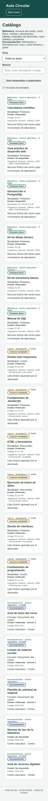
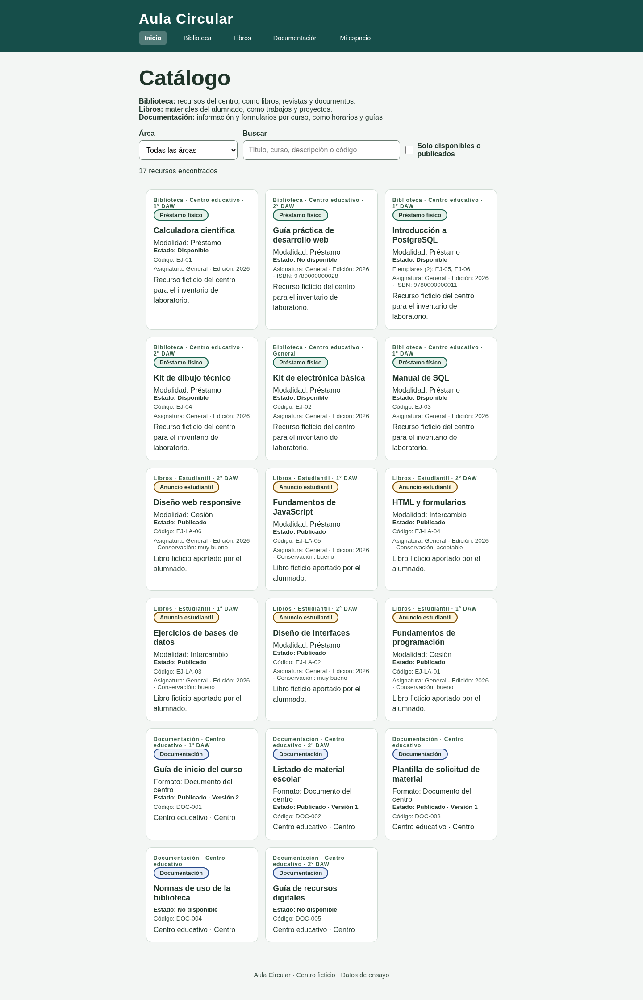
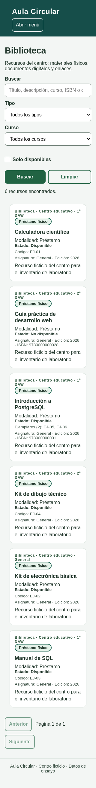
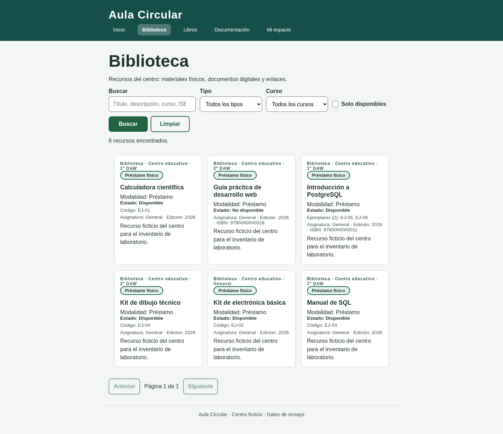
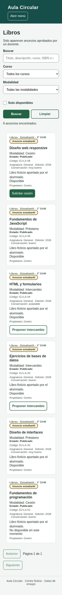
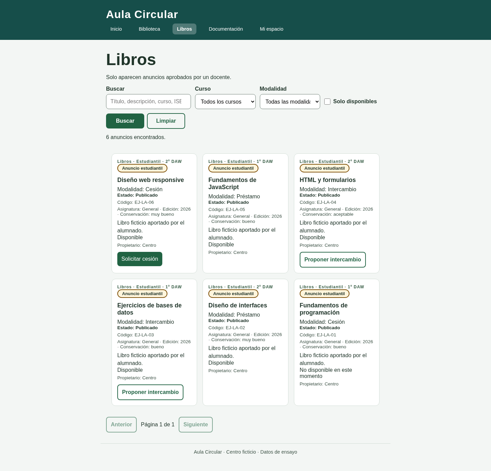
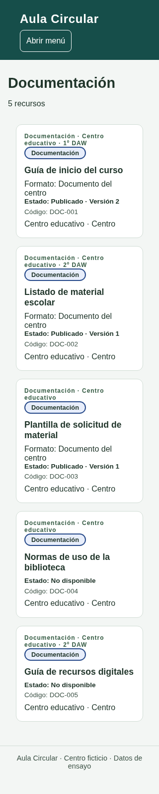
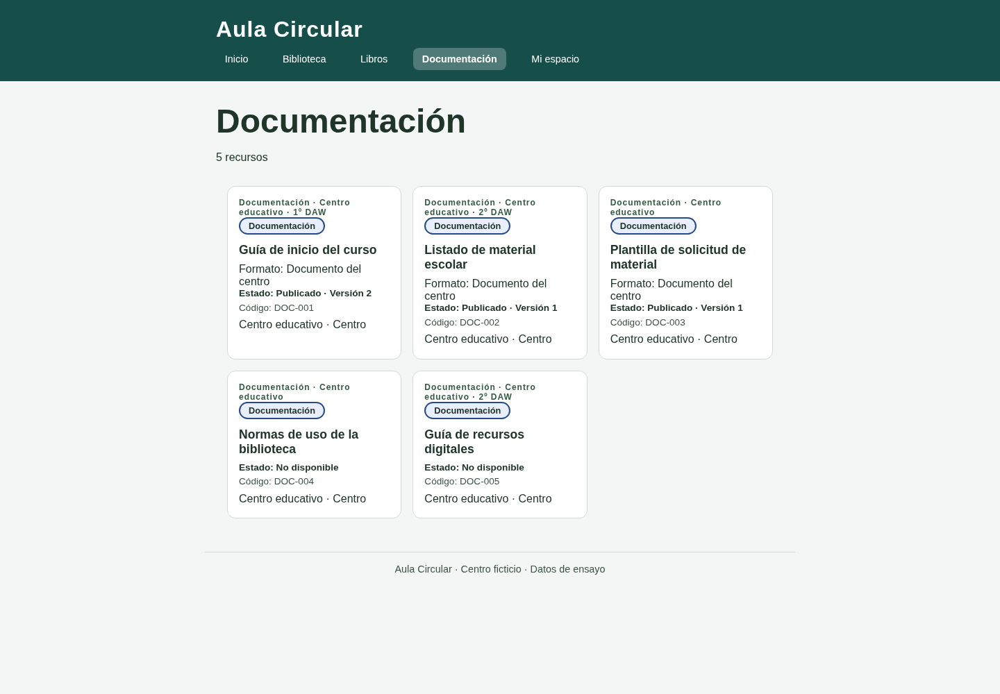
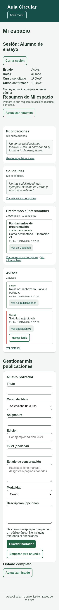
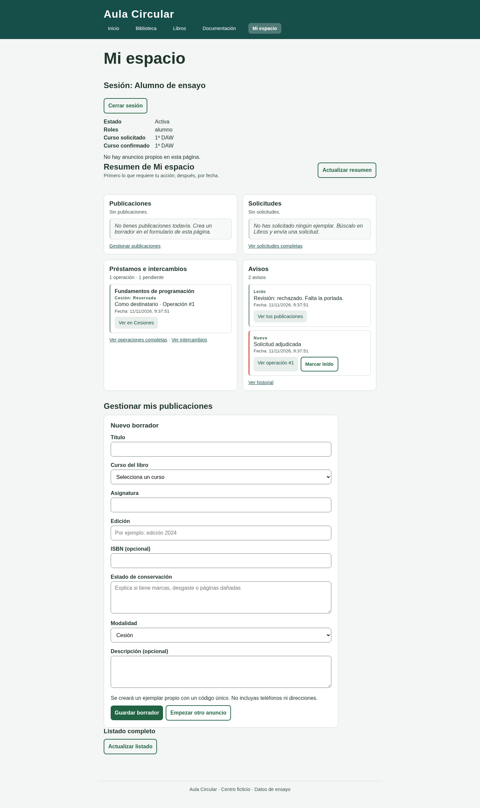
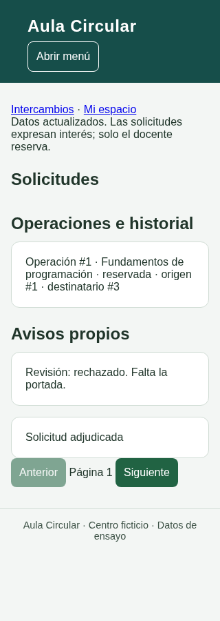
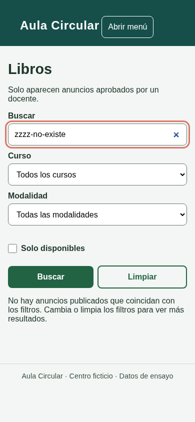
propietario_usuario_id nulo
(sql/001_laboratorio.sql): no aparecen en Mi espacio y la moderación intentaría avisar a un destinatario nulo.
Es un defecto de los datos de ensayo, no de esta tarea; queda pendiente decidir a quién pertenecen.public/index.html redirige con un script en línea que la política CSP bloquea; la página raíz deja de
redirigir y solo muestra el enlace. Detectado en esta comprobación, fuera de las cinco secciones.